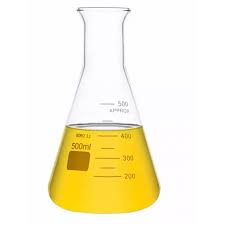
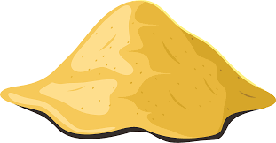
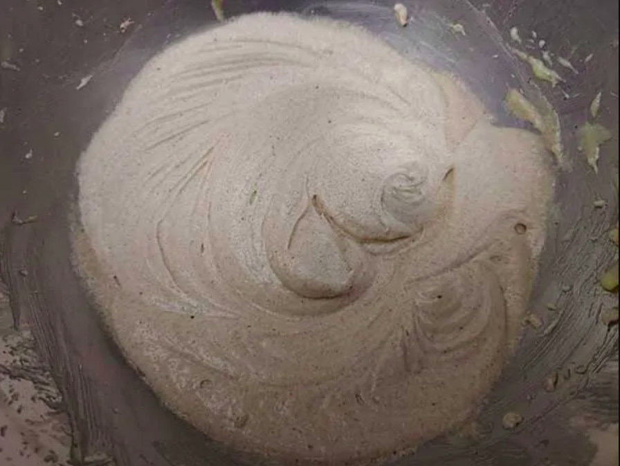

Ghana's Coastline is
Disappearing
But We Can Rebuild It With Living Technology
A bioengineered solution to erosion, pollution, and ocean health monitoring
SCROLL
But We Can Rebuild It With Living Technology
A bioengineered solution to erosion, pollution, and ocean health monitoring
A Growing Environmental Emergency
Ghana's coastline is rapidly eroding due to rising sea levels, pollution, and unsustainable human activity. Communities, wildlife, and marine ecosystems are well affected. Without intervention, key areas critical for local economies and biodiversity could be lost.

Rebuilding Coastlines with Living, Bioengineered Systems
Our project uses engineered biological systems to stabilize coastlines, reduce pollution, and monitor ocean health in real time. By combining synthetic biology with environmental engineering, we create a sustainable and adaptive solution.

Living materials that strengthen and protect coastlines through engineered microorganisms.

Sensors track ocean health and environmental changes, providing live data on ocean conditions.

Eco-friendly systems that adapt and regenerate naturally alongside the environment.
We used a process called bio-cementation. Bio-cementation uses engineered microbes and chemicals (Sodium bicarbonate and calcium chloride) to form a binding solution which is then added to sand to form a mixture solidified to form a sea defense structure.

Binding solution: NaHCO₃, Gelatin, CaCl₂ & Vibrio in hydrogel

Natural sand base forming the structural foundation

Solidified pentacone defense wall structure

The bio-cement mixture (sand + binding solution) are placed in a pentacone shaped container and allowed to dry and solidify to form the bio-sea defense wall (pentacone) to prevent erosion, plastic pollution and enhance sustainability.
Embedded within each Pentacone is a layer of biosensing bacteria. These engineered microbes detect environmental signals such as pollutants, pH, salinity — allowing us to monitor ocean health in real time. It is sensitive to color change based on the presence of some metal ions in the sea water.
Real-time detection of pollutants and toxins in the surrounding ocean environment.
Engineered bacteria embedded within hydrogel provide long-lasting biosensing capability.
Visual color-change response signals the presence of specific metal ions and contaminants.
Aligned with Global Sustainability Goals
The bio-cementation process reduces reliance on concrete; the calcium carbonate formation makes the Pentacone durable and strong, hence reducing wave energy and preventing erosion.